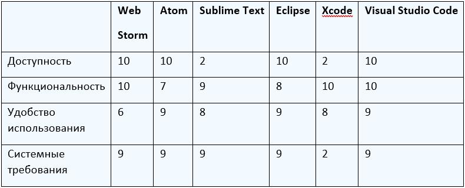

VS Code для вёрстки
IDE – интегрированная среда разработки, используемая программистами для эффективной разработки программного обеспечения.
Редактор кода – программа, работающая как текстовый редактор, и подходящая для написания кода.
IDE способна выполнять больший функционал, нежели редактор кода, и, как правило, уже состоит из редактора кода, компилятора и отладчика.
На выбор IDE для разработки влияет не только опыт разработчика, но и индивидуальные особенности, достоинства и недостатки каждой среды.
Наиболее популярные IDE для веб-разработки:
WebStorm – одна из самых популярных IDE для веб-разработки, созданная компанией JetBrains. Данную среду разработки используют для создания самых современных веб-приложений, так как она обладает умным дополнением кода, обнаружением ошибок и функции рефакторинга.
Atom – редактор кода, который разработало сообщество GitHub с целью создания собственных модулей и распространении их в репозиторий в открытый доступ.
Sublime Text – платный редактор кода, который поддерживает быструю навигацию по файлам и различным участкам кода. Данный редактор поддерживает такие языки программирования, как C и Python, и различные плагины.
Eclipse – это свободная IDE, поддерживающая огромное количество языков и расширений, которые можно скачать на Eclipse Marketplace.
Xcode – это богатая своей функциональность IDE для веб-разработки, доступная только на MacOS. В эту среду включены инструменты командной строки (CTL).
Visual Studio Code – это редактор кода, который давно лидирует в рейтинге популярности у разработчиков. Этот редактор создан компанией Microsoft для упрощения и ускорения процесса разработки.
Brackets – свободный, кросплатформенный редактор кода для Web-разработки от Adobe.
IDE и редакторы кода будут сравниваться по следующим показателям:
Доступность – лёгкость в получении и стоимость продукта.
Функциональность – наличие дополнительных функций и плагинов, облегчающих разработку.
Удобство использования – простота интерфейса и уровень порога входа в данный продукт.
Системные требования – возможность использовать в различных операционных системах, ресурсы ПК.
В таблице 1 представлены оценки IDE и редакторов кода по всем вышеперечисленным показателям по десятибалльной шкале.
В итоге анализа IDE и редакторов кода можно сделать следующие выводы: